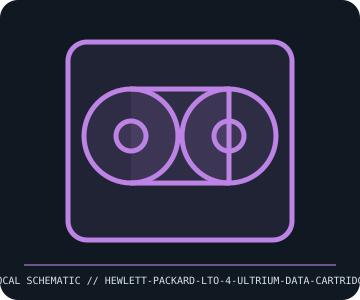

[ REMOVABLE MEDIA // INDIVIDUAL RECORD ]
HP LTO-4 Ultrium Data Cartridge (C7974A)
LTO Ultrium generation 4, circa 2007. This entry describes the identified medium or reader, not a bundled drive/media pair; exact capacity and compatibility are model- and host-dependent.

IDENTIFICATION: Record the full label, manufacturer part number, revision/date code, format markings, and packaging. Product-family names alone do not identify capacity generation or supported drive.
Format and compatibility
| Catalog subcategory | Tape and optical cartridges |
|---|---|
| Catalog identity | HP LTO-4 Ultrium Data Cartridge (C7974A) |
| Format / era | LTO Ultrium generation 4, circa 2007 |
| Media/device distinction | This record is the removable medium only; the compatible drive is separate and not included. |
| Capacity / interface | HP C7974A LTO-4 data cartridge; 800 GB native capacity and up to 1.6 TB at assumed 2:1 compression; 820 m half-inch tape. LTO-4 media includes hardware encryption support when used with a compatible drive/software stack. |
| Compatibility | Read/write in LTO-4 drives. LTO-5 drives can read/write LTO-4 media; later-generation support varies (for example, LTO-6 reads LTO-4 but does not write it). Confirm the exact drive generation, firmware, and application before relying on interchange. |
| Variant caveat | C7974A identifies HP-branded LTO-4 media; barcodes, WORM media, cleaning cartridges, and data cartridges are different. Native capacity is the meaningful comparison; compression depends on content and settings. |
Media care and preservation
Store cartridge in a case, within the manufacturer temperature/humidity range, with barcode and generation legible. Acclimate after transport; keep away from magnetic fields, dust, liquids, and direct sun. Track loads and errors; periodically verify readability and maintain multiple copies.
- Preserve original packaging, labels, and acquisition/context notes; photograph both sides and record any write-protect state before use.
- Keep valuable contents in at least two independently verified copies on separate storage. Record a checksum and test a restore; removable media alone is not a preservation plan.
Model and version caveats
C7974A identifies HP-branded LTO-4 media; barcodes, WORM media, cleaning cartridges, and data cartridges are different. Native capacity is the meaningful comparison; compression depends on content and settings.
Compatibility statements are limited to the named format/model and published host support. Check manufacturer manual, firmware, regional SKU, and media generation before inserting or writing. A similar connector or cartridge shell is not proof of compatibility.
Sources & further reading
- HPE — LTO Ultrium data cartridgesManufacturer product family documentation for cartridge capacity, environmental handling, and generation identification.
- LTO Program — LTO technology generationsLTO Consortium reference for generation capacities, backward compatibility, and encryption features.
Sources identify the relevant standard, manufacturer, or product family. Where an archived SKU-specific datasheet is unavailable, the exact label/manual and supported host list take precedence over family-level marketing claims.